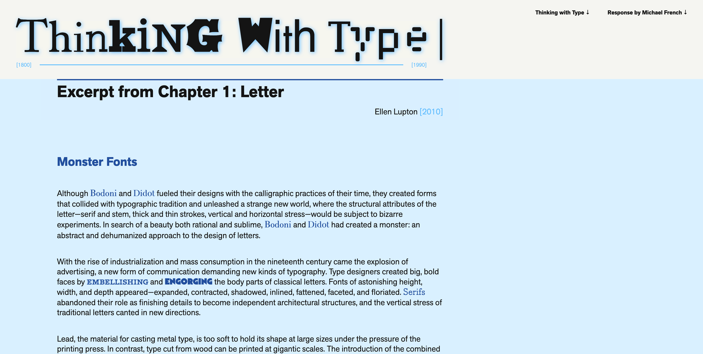
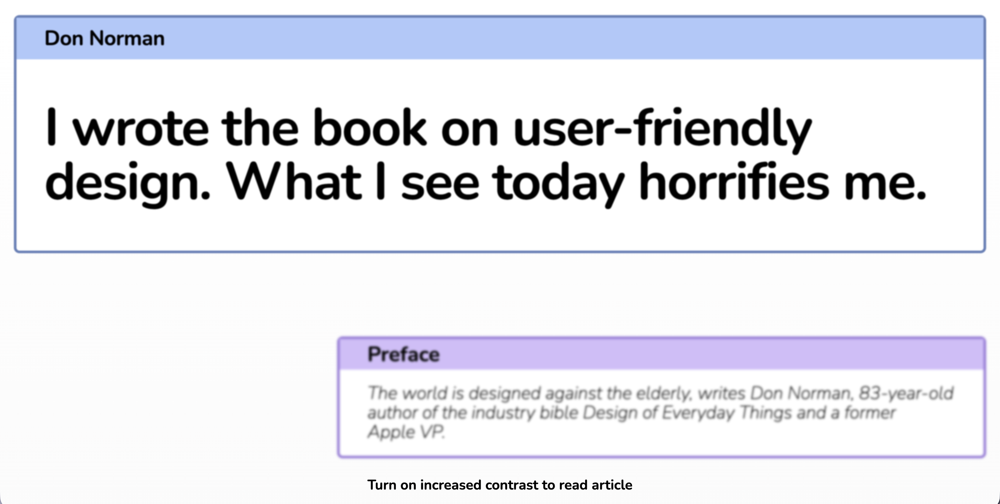
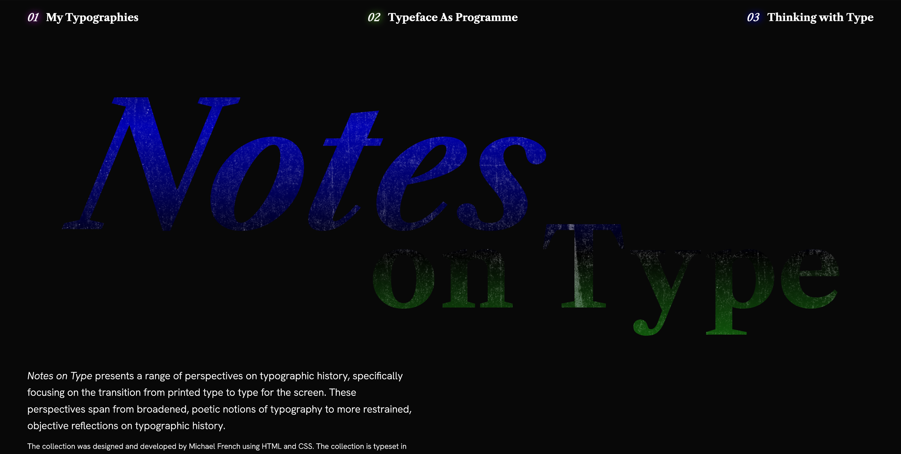

Here is my work from Typography & Interaction, a year-long course in the Parsons MPS Communication Design program (Class of 2026).
This project explores the timeline of typographic evolution from the 1800s through the late 1900s, using text excerpts from Ellen Lupton's Thinking With Type. It features a typographic timeline composed of the typefaces cited within the selected chapters. The selections from Lupton are stylistically contrasted with my personal perspective.
This project, a collaboration with Kinza Ghanchi, immerses the reader in the potential user experience challenge they may face as an elder. Using text from Don Norman's article, I wrote the book on user-friendly design. What I see today horrifies me., we explore the notion that senior-centric design can optimize user experiences for all.
Revisiting Thinking With Type by Ellen Lupton, this project aggregates multiple articles focused on the transition of type from the page to the screen. With addition text excerpts from My Typographies by Paul Elliman and Typeface as Programme by Jürg Lehni, I created a design system to connect the pieces with aesthetics that allude to the grittiness of the hot metal typesetting process.
